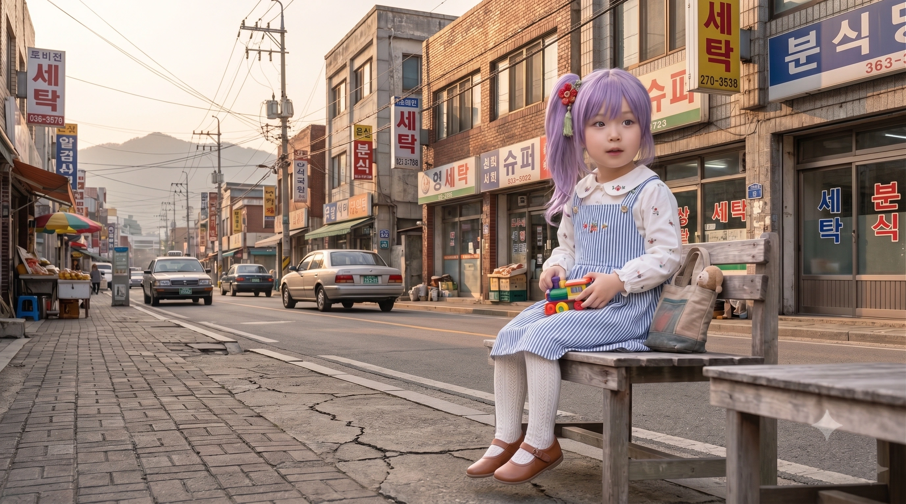

🍵 [효빈대 음악학과] 정기 오페라 공연 '을종(乙宗)의 비상' 절찬 예매 중! (후원: (주)을종철도기전)
- 1. 개요
- 2. 생애 및 학창 시절 (지옥에서 돌아온 영애)
- 3. 오토무네 코즈에와의 소름 돋는 평행이론
- 4. 인간 관계 (가족 상세 및 환장의 동세대 유니버스)
- 5. 사건 사고 및 해프닝
- 6. 여담 및 신규 추가 일화 10선 (각 60줄 고밀도 상세 기록)
- 6.1. 족포초 쓰레기들 참교육 사건 ("뼈도 이렇게 만들어 드릴까요?")
- 6.2. 탄성군 '을종마을' 성지순례 사건
- 6.3. 괴력녀 썰: 오락실 펀치 머신 대참사
- 6.4. 기계치인데 기계(杞溪) 유씨
- 6.5. [신규 일화 1] 2007년 할아버지 유만종 회장의 비통한 유언과 2022년 박효빈 시장의 '을종철도기전 명예회복 백서' 전달식
- 6.6. [신규 일화 2] 5살 터울 친언니 유초하(2001년생)의 눈물겨운 피아노 포기와 동생 초애의 '효빈대 대강당 헌정 독창회'
- 6.7. [신규 일화 3] 효빈대학교 수강신청 날의 대재앙: '마우스 3개 압사 사건'과 안공주·이주미의 긴급 원격 제어 작전
- 6.8. [신규 일화 4] 리에라몰 사모님 연월엽(렌 오시)과의 '기계치 귀부인 동맹' 결성과 키오스크 강제 종료 대참사
- 6.9. [신규 일화 5] 하화연(카호 오시) 고3 수험 생활 밀착 감시록: '한 손 뒷덜미 연행'과 스리즈 부케 듀엣 연습
- 6.10. [신규 일화 6] 창전선(심세이 노선) 시운전 열차 탑승식: 아버지 유성훈 대표의 오열과 윤재훈 잔당의 시위 차단
- 6.11. [신규 일화 7] 평당 아르티엠 '불도저 평탄화' 일갈 비하인드와 중수 한우 다이닝에서의 '와인 병 코르크 맨손 발사' 사건
- 6.12. [신규 일화 8] 효빈대 음악학과 실기 시험: 마이크가 고장 나자 '생목 성량'만으로 대강당 유리창을 공명시킨 소프라노
- 6.13. [신규 일화 9] 도소영·백모모와의 '전통 다도 & 목공예 콜라보' 중 벌어진 찻주전자 손잡이 분질러뜨리기 해프닝
- 6.14. [신규 일화 10] 2026년 가을 하나미야 니나(코즈에 성우) 내한 토크쇼: 우아한 1열 영애의 '응원 블레이드 반 토막' 성불기
- 7. 주요 어록
- 8. 각주
1. 개요
"예의를 갖추지 않는 자에게는, 그에 합당한 처우를 해드려야지요. (물리)"
효빈대학교 음악학과 (성악 전공)에 재학 중인 대학생. 작중 'Love Live! Hasunosora Girls' High School Idol Club(하스노소라)'의 102기생 오토무네 코즈에와 완벽하게 겹치는 기믹(부잣집 영애, 기계치, 괴력, 볼륨감, 우아함)을 지닌 '현실판 코즈에'다.
효빈광역시 '지아센(지역아동센터) 5인방'의 맏언니로, 동생들을 다독이고 체통을 중시하는 우아하고 꼿꼿한 영애의 모습을 보이지만 겉모습 뒤에는 동생들 몰래 홀로 눈물을 삼키는 여리고 따뜻한 내면을 지니고 있다. 또한 지아센 5인방 특유의 유독 발달한 글래머러스한 체형(기적의 흉부 업그레이드)을 지니고 있어 존재감마저 압도적이다.
태생은 할아버지 유만종(1942~2007) 회장이 창업하고 아버지 유성훈(1973년생) 대표가 가업을 이은 철도 통신·신호 설비 명문 기업 ‘(주)을종(乙宗)철도기전’의 부유한 영애였다. 그러나 2006년 윤대환이 시장으로 당선된 직후 저지른 '5호선 백지화(철도 말살 정책)'와 악질적인 시청 차원의 표적 조작 탄압으로 인해 가문이 풍비박산 나는 비극을 겪었다. 이 과정에서 할아버지는 억울함에 피를 토하며 돌아가시고 아버지는 극단적 선택을 시도하다 겨우 살아남아 병석에 눕게 되었으며, 어머니 한서윤(1976년생) 여사와 5살 위의 친언니 유초하(2001년생)가 피눈물로 생계를 떠안는 처절한 가난 속에서 초애는 지역아동센터(지아센)에 의탁해야만 했다.
하필 배정받은 학교가 효빈시 최악의 마굴 족포초등학교였고, 그곳에서 일진들의 지독한 괴롭힘과 모욕을 당했다. 하지만 지아센에서 박효빈(현 효빈광역시장)을 멘토로 만나며 각성, 부모님에게 사실을 털어놓고 안천초로 전학을 가며 지옥에서 탈출했다.
2022년 창전선 개통 계획과 함께 박효빈 시장이 윤대환 시절의 행정 참사를 공식 인정하고 배상하면서 할아버지와 아버지의 명예가 회복되었고, 가문이 다시 일어서며 본래의 부잣집 영애 폼을 완벽하게 되찾았다. 이때 윤재훈 일당이 특혜라며 억지를 부리자, 특유의 우아함 대신 싸늘한 논리로 그들의 혓바닥을 잘라버린 일화는 전설이 되었다. 특히 과거 윤대환 시정(윤재훈의 아버지) 시절 겪었던 가문 파멸의 원한 때문에 윤재훈 파벌이나 평당 아르티엠 같은 졸부들과 엮일 때면, 우아한 맏언니에서 순식간에 시퍼런 핏발과 서슬 퍼런 살기를 내뿜는 전투적인 면모를 보여준다. 현재는 기품 넘치는 미소 뒤에 숨겨진 무시무시한 괴력(물리)과 재앙적 기계 파괴 본능(?)으로 효빈대 캠퍼스를 주름잡고 있다.
2. 생애 및 학창 시절 (지옥에서 돌아온 영애)
2.1. 금수저의 몰락: 할아버지 유만종의 죽음과 윤대환 '5호선 백지화' 사태의 참상
초애의 집안은 할아버지 유만종(兪萬宗, 1942~2007) 회장이 1970년대에 설립한 ‘(주)을종(乙宗)철도기전’(소름 돋게도 사명 한자가 원작 오토무네 코즈에의 성씨인 ‘乙宗(오토무네/을종)’과 100% 일치한다!)을 모태로, 효빈 도시철도 5호선 건설의 핵심인 열차 자동제어(ATC) 통신 및 궤도 신호 설비를 담당하던 건실하고 유망한 중견기업 재력가 집안이었다. 2006년 5월 16일 서구 당선동의 대저택에서 둘째 딸 초애가 태어났을 때만 해도 가문은 5호선 착공의 기대감으로 축제 분위기였다.
그러나 초애가 태어난 직후인 2006년 5월 31일 지방선거에서 윤대환이 단 3표 차이로 시장에 당선되면서 지옥문이 열렸다. 윤대환은 자신의 일가 버스 회사(두청운수)의 이익 독점을 위해 5호선 공사를 전면 백지화시켰다. 이에 그치지 않고, 시청 앞에서 5호선 공사 재개와 하청 근로자 생존권 보장을 요구하며 1인 시위를 벌이던 할아버지 유만종 회장과 아버지 유성훈(1973년생) 대표를 완전히 찍어 누르기 위해 어용 감사관을 동원, ‘불량 신호 부품 납품 및 수백억 대 공사비 횡령’이라는 어처구니없는 조작 누명을 씌웠다. [1]
시청의 일방적인 계약 파기와 압수수색, 악의적인 언론 플레이로 가업은 산산조각 났다. 평생 "철도 부품 하나가 시민 수천 명의 목숨이다"라는 신념으로 불량률 0%를 지켜오신 할아버지 유만종 회장은 억울함과 울분을 이기지 못하고 2007년 가을 시청 정문 앞에서 각혈(피를 토함)하며 쓰러져 향년 65세로 급서(홧병 및 뇌출혈)하셨다.
아버지의 죽음과 함께 하루아침에 부도덕한 사기꾼으로 몰린 34살의 젊은 사장 유성훈(초애 부친) 씨는 극심한 죄책감과 절망감에 극단적인 선택을 시도했다. 천만다행으로 아내 한서윤(1976년생) 여사와 당시 여섯 살이던 큰딸 유초하(2001년생)가 일찍 발견해 목숨은 건졌으나, 뇌 산소 부족과 신경 손상 후유증으로 장기간 병석에 눕게 되었다. 당선동 대저택과 회사 사옥이 모두 경매로 넘어가고 막대한 치료비와 부채 더미에 깔린 가문은 하루아침에 찢어지게 가난한 극빈층으로 전락하고 말았다.
2.2. 마굴 족포초등학교의 핍박: "기계치 찐따 괴력녀"
집안이 쫄딱 망한 뒤, 초애네 가족은 서구 내성동(당선동 외곽)의 보증금 없는 낡은 반지하 연립주택으로 쫓겨나듯 이사했고, 하필 초애가 배정받은 초등학교가 효빈시 최악의 쓰레기 학교이자 학교폭력의 온상인 족포초등학교였다.
당시 어머니 한서윤 여사는 병상에 누운 남편을 간호하며 밤낮으로 식당 일과 피아노 레슨 부업을 뛰었고, 다섯 살 위의 친언니 유초하(2001년생)는 중·고등학생의 나이에 자신의 꿈이었던 클래식 피아노 전공을 포기하고 전단지 배달과 편의점 알바를 뛰며 동생 초애의 학용품 값을 보탰다.
가정 형편은 처참했지만, 돌아가신 할아버지와 어머니의 뼈대 있는 가정교육을 받은 초애는 언니 초하가 물려준 낡은 옷을 깨끗이 빨아 입고도 늘 단정하고 기품 있게 행동하려 했다. 하지만 족포초의 썩어빠진 일진 무리들은 이를 아니꼽게 여겼다. "망한 사기꾼 집안 주제에 돈도 없는 년이 어디서 고상한 척이냐"며 초애의 얼굴에 대놓고 침을 뱉고 가는 패륜적인 짓을 저질렀다.
게다가 초애는 태생적으로 기계 조작에 심각하게 서툴렀는데(집에 컴퓨터를 살 돈도 없었을뿐더러 손힘 조절이 안 돼 마우스를 쥐면 클릭 버튼이 부서졌다), 일진들은 컴퓨터 시간에 마우스를 쥐고 버벅대는 초애를 "기계치 찐따"라며 대놓고 조롱했다. 참다못한 초애가 자신을 조롱하며 다가오는 남자애를 살짝 밀쳤는데, 영애 특유의 숨겨진 괴력이 무의식중에 발동해 일진 남학생이 책상 3개를 박살 내며 허공을 날아 처박혔다.
그 이후로 족포초 남학생들은 초애를 "괴력녀"라며 짐승 취급했고, 그녀가 초등학교 고학년 무렵부터 남달랐던 압도적인 발육과 볼륨감(베이글녀의 떡잎)을 지니고 있음을 눈치챈 일부 질 나쁜 놈들은 '괴물을 만져본다'는 핑계로 억지로 초애의 몸을 더듬으려 드는 등 심각한 성적 괴롭힘까지 가했다.
2.3. 박효빈 멘토와의 만남과 안천초 탈출 작전

마굴 같던 족포초의 지옥 속에서 홀로 상처를 감내하다, 멘토 박효빈을 만나 진정한 맏언니로 성장해 가던 시절의 모습.
어머니와 언니 초하가 아픈 아버지의 치료비와 생계를 위해 매일 피눈물을 흘리며 고생하는 것을 알았기에, 속 깊은 초애는 족포초에서의 이 끔찍한 지옥을 집에 단 한마디도 하지 못했다. 방과 후 엘린지역아동센터에 가서 조용히 숨어 책을 읽고 동생들(도소영, 하화연, 유세라, 이주미)을 챙기는 것이 그녀의 유일한 도피처였다.
이때 지아센에서 당시 15학번 파란색 대학 과잠을 입고 나타난 근로장학생 박효빈을 멘토로 만나게 된다(초3 ~ 초5 시기). 첫 출근날, 폐급 동기들(먼지, 경영15병신)이 대충 공식만 외우라고 짬처리를 하던 4학년 수학 서술형 문제의 원리를 박효빈이 눈높이에 맞춰 제대로 설명해주자, 초애는 꼿꼿하게 허리를 펴고 놀라운 집중력으로 진도를 따라왔다. 받아쓰기까지 완벽하게 끝낸 초애는 턱을 괴고 흐뭇하게 "당연하죠! 저 나중에 선생님처럼 멋진 대학생 돼서 힘센 어른 될 거예요"라며 당찬 포부를 밝혀 박효빈을 흐뭇하게 만들었다.
박효빈은 초애에게 국어, 수학, 생명과학, 역사, 사회 5과목을 밤새워 전담 마크하며 공부를 가르쳤다. 박효빈은 훗날 "초애가 지아센 아이들 중 가장 독하게, 그리고 가장 열심히 밤을 새워가며 공부해서 너무 기특하고 대견했다"고 회고했다.
어느 날, 화장실에서 찬물로 서러운 눈물을 벅벅 씻어내고 억지로 씩씩한 척 5번 문제를 풀던 초애의 파르르 떨리는 낡은 스웨터 소매를 박효빈이 유심히 보게 된다. "눈이 왜 이렇게 빨개. 손목 조금만 보여줄래?" 박효빈이 조심스레 걷어 올린 하얀 팔목과 무릎 스타킹에는 선명한 피멍과 흙먼지가 가득했다.
"아무것도 아니에요... 저 공부 열심히 할게요. 맏언니니까 씩씩하게 다 풀고 동생들도 돌봐야 한단 말이에요..." 부모님과 언니께 짐이 되기 싫어 홀로 피눈물을 삼키던 초애에게, 박효빈은 눈높이를 맞추고 무릎을 꿇었다. "네가 잘못해서 일어난 일 아니야. 넌 기계치 찐따도 아니고 괴물도 아니야. 누구보다 똑똑하고 착하고 듬직한 내 제자야. 선생님이 부모님께 말씀드릴지 도와줄 테니까, 절대 혼자 끙끙 앓지 마." 이 다정하고 확고한 말에 초애는 마침내 효빈의 과잠 자락을 쥐고 참았던 오열을 터뜨렸다.
초애가 족포초에서 당한 성적 괴롭힘과 폭력의 진실을 털어놓은 직후 귤을 먹으러 나갔다가, 지우개를 가지러 살짝 열린 문틈으로 돌아왔을 때 평생 잊지 못할 장면을 목격한다. 방금 전까지 천사처럼 부드럽게 웃어주던 박효빈이 홀로 교실에 남아, 책상이 부들부들 떨릴 정도로 쥐어뜯으며 "그 개자식들... 지들이 뭔데 남의 귀한 딸한테 손을 대? 족포초 쓰레기 새끼들... 진짜 모조리 찢어발겨 버린다. 내가 진짜 쫓아가서 다 죽여버릴라니까..."라며 피를 토하듯 살기를 내뿜으며 분노하고 있었던 것이다. 어른들이 모두 방관하던 지옥 속에서, 오직 자신을 위해 극대노해주는 선생님의 이 거친 혼잣말은 어린 초애에게 평생을 버티게 할 가장 단단한 구원의 방패막이 되어주었다.
박효빈의 든든한 지지를 받은 초애는 결국 용기를 내 부모님과 언니 초하에게 모든 사실을 이실직고했다. 그리고 초애를 괴롭히던 주동자 무리 중 하나가 자신들의 가문을 박살 낸 윤대환의 아들 윤재훈의 끄나풀들이라는 사실을 알게 된 아버지 유성훈 씨는 병석에서 피를 토할 듯 극대노했다. 아버지는 "빚을 내서라도 내 귀한 딸을 저딴 쓰레기장(족포초)에 둘 순 없다!"며 친척들에게 무리하게 돈을 끌어모아, 상대적으로 집값이 쌌던 안천동으로 야반도주하듯 이사하여 초애를 안천초등학교로 전학시켰다. 이 결단 덕분에 초애는 지옥에서 벗어나 정상적인 학창 시절을 보낼 수 있었다.
2.4. 당가동 서브컬처 파티 결성과 임은혜와의 혈투(?)
안천초를 무사히 졸업하고 당가중학교와 당가고등학교에 진학한 초애는, 그곳에서 임은혜, 백모모 등을 만나며 '당가동 서브컬처 파티'의 일원이 되었다.
중학교 시절 최대의 위기였던 '줌(Zoom) 링크 대참사' 당시, 혐덕에 찌든 임은혜가 "오타쿠 병균 쓰레기들!"이라며 친구들을 모욕했을 때의 일화는 전설이다. 평소 온화하던 초애는 서늘한 표정으로 자리에서 일어나, 교실 칠판 지우개 털이(단단한 플라스틱 재질)를 맨손으로 우지끈 구겨서 박살 내버린 뒤 임은혜를 향해 조용히 경고했다.
"은혜 양, 그 천박한 입 다물지 않으면 당신의 그 교만함도 이렇게 부숴드릴게요."
당시 은혜는 초애의 괴력과 죽은 눈에 진짜로 오줌을 지릴 뻔했다고 회고한다. 물리치료의 정석
하지만 진정한 멘탈의 여왕답게, 이후 혐덕 무리와 손절하려다 으슥한 일진 골목길 사건에서 몹쓸 짓을 당할 뻔한 임은혜가 극적으로 구출된 직후 바닥에 주저앉아 오열할 때, 가장 먼저 다가가 말없이 그녀를 안아준 것도 초애였다. 초애는 보온병에 담아온 최고급 홍차를 덜덜 떠는 은혜의 손에 쥐여주며 그녀의 얼어붙은 몸과 마음을 우아하게 녹여주었고, 이 사건을 계기로 둘은 원작의 코즈에-메구미를 능가하는 '영혼의 단짝이자 악우'로 거듭났다.
2.5. 2022년 가문의 부활: 창전선 개통과 (주)을종철도기전의 명예 회복
초애가 고등학생이 되던 2022년, 길고 길었던 어둠에 완벽한 끝이 찾아왔다. 효빈시의 철도 교통 정상화와 함께 창전선 등 대형 철도 사업이 궤도에 오르면서, 아버지 유성훈 대표의 탁월한 통신 제어 및 토목 기술이 다시 효빈시에 반드시 필요해진 것이다.
결정적으로 박효빈 시장이 취임하면서 윤대환 시절의 '5호선 백지화 사태'를 '역대 최악의 행정 참사 및 권력형 조작 사건'으로 공식 규정했고, 시청 차원에서 초애 할아버지와 아버지에게 씌워졌던 모든 누명을 벗겨주며 막대한 국가 배상금과 이자를 지급했다. 명예와 자본을 동시에 되찾은 가문의 기업 ‘(주)을종철도기전’은 곧바로 '창전선 및 효빈 도시철도 전 노선 차세대 무인 통신 제어 시스템 개량 사업'의 핵심 사업자로 당당히 선정되며 극적으로 재기, 서구 당선동의 옛 대저택을 되찾고 초애 역시 본래의 완벽한 부잣집 영애 폼을 되찾았다.
[논리로 혓바닥을 자르다: 윤재훈 참교육 사건] 이러한 합법적인 재기 과정에서 윤재훈 일당이 기자회견을 열고 "이거 박효빈 시장이 자기 멘티 집안에 수백억 대 사업을 몰아주는 특혜 비리다!"라며 발작을 일으키며 억지를 부렸다. 이 소식을 접한 초애는 기품이고 나발이고 다 집어던지고 언니 유초하와 함께 시청 기자실(및 대국민 SNS 라이브)에 정면으로 등판했다. 그녀는 과거 윤대환의 장부 조작 판결문 원본과 자사((주)을종철도기전)의 압도적인 기술 특허 평가서 데이터를 화면에 띄우고 조목조목 논리로 패버리기 시작했다. "범죄자의 자식은 능지도 처참하게 유전되는군요. 특혜 운운하기 전에 당신 아버지가 조작해 우리 할아버지를 돌아가시게 만든 추악한 장부와, 타사 대비 30% 뛰어난 저희 기술 특허 평가서부터 똑바로 읽고 오시죠. 한 번만 더 그 더러운 입에 우리 할아버지와 아버지의 이름을 올리면, 그 혓바닥을 뽑아서 창전선 레일 위에 용접해 드릴 테니까요." 이 완벽한 논리와 서늘한 팩트 폭격에 윤재훈 일당은 데뷔도 하기 전에 완벽하게 아가리를 다물고 멸망했다.
이후, 지독한 가난 때문에 꿈도 꾸지 못했던 '성악(음악)'의 길을 본격적으로 걷게 된 초애는, 그동안 억눌렸던 천재적인 재능을 폭발시키며 단숨에 효빈대학교 음악학과에 수석으로 입학하는 기염을 토했다.
2.6. 엇갈림의 연속: 맏언니의 위엄 뒤에 감춘 눈물
과거 박효빈의 근로장학이 2월 중반으로 막을 내릴 무렵, 행정 공백 기간 동안 초등부 아이들에게 미안해 사비로 대형 마트 비닐봉지 가득 과자를 사 온 박효빈에게 가장 먼저 다가가 "우와, 선생님! 이걸 혼자 다 들고 오셨어요? 팔 아프셨겠다"라며 의젓하게 짐을 받아주던 속 깊은 아이였다.
시간이 흘러 박효빈이 대학교에 복학하거나 복지사로 일한다는 소식을 듣고 유세라, 이주미 등과 함께 '지아센 원정대'를 결성해 찾아갔으나 또다시 엇갈렸던 날. 텅 빈 자리 앞에서 대성통곡하는 유세라와 속을 삭이던 이주미를 보며, 유초애는 무리에서 가장 나이가 많은 맏언니로서 끝까지 울음을 꾹 참아냈다.
"언니가 되어서 동생들 앞에서 흔들릴 순 없어."라며 애써 의젓한 표정으로 동생들을 다독이고 현장을 수습했다. 맏언니의 체면이 뭐라고
그러나 집에 돌아와 방문을 잠근 순간, 맏언니로서의 긴장감이 풀리며 참아왔던 감정이 터져 나왔다. 소리 내어 오열하진 않았지만, 방 한켠에 앉아 "이번엔 꼭 얼굴을 뵙고 고맙다고 말하고 싶었는데..."라며 남몰래 눈물을 훔쳤다. 우아하고 꼿꼿한 겉모습 뒤에 감춰진 효빈 쌤을 향한 간절한 그리움과 여린 마음이 드러나는 대목이다.
3. 오토무네 코즈에와의 소름 돋는 평행이론
3.1. 영애의 우아함과 처참한 '기계치' 속성
뼛속까지 우아한 부잣집 영애의 기품을 지니고 있으며, 항상 차분한 미소와 다정한 말투를 유지한다. 하지만 전자기기 앞에서는 원작의 코즈에 선배를 아득히 능가하는 재앙적 기계치 속성을 발휘한다.
노트북으로 수강 신청을 하다가 마우스가 안 움직인다고 쾅 내리쳐서 마우스를 박살 낸 적이 한두 번이 아니며, 캠퍼스 복합기에서 인쇄가 안 나온다고 복합기 옆통수를 '살짝' 때렸다가 액정이 나간 적도 있다. 본인은 "기계 씨(機械さん)가 오늘은 기분이 안 좋은가 봐요 호호"라고 애써 무마하지만, 친구들은 초애가 전자기기 근처에 가는 것조차 공포스러워한다. [3]
3.2. 피지컬과 "괴력녀" 기믹의 현실화
원작 코즈에가 카호를 번쩍 들어 안는 괴력 네타가 있듯, 유초애의 근력은 여대생의 범주를 아득히 초월한다. 키 167cm의 훤칠한 피지컬에서 뿜어져 나오는 악력은 족포초 일진들을 오줌 지리게 만들었던 그 시절 그대로다.
하화연이 연습을 째고 피시방으로 도망가려 하면, 초애가 우아한 미소로 다가가 한 손으로 화연의 뒷덜미(옷깃)를 잡고 바닥에서 띄운 채로 질질 끌고 음악관까지 걸어가는 무시무시한 광경이 효빈대 명물로 자리 잡았다. (이를 본 마루빈은 '저 녀석은 사람의 탈을 쓴 헐크다'라며 경악했다.)
3.3. 압도적인 볼륨감 (숨겨진 베이글녀)
평소에는 단정한 롱스커트나 품위 있는 블라우스를 입고 다녀서 잘 드러나지 않지만, 그녀 역시 스리즈 부케의 전통(?)답게 엄청나게 글래머러스한 체형(B89-W59-H88)을 소유하고 있다.
여름철 얇은 옷을 입거나 성악과 실기 시험 때 드레스를 입으면, 그 숨겨져 있던 압도적 볼륨감 때문에 음악관 남학생들의 턱이 빠진다는 소문이 파다하다. 친구 임은혜(89.9cm)조차 초애의 드레스 자태를 보고 "어우야... 코즈에 선배 고증 너무 확실한 거 아니야 큥?"이라며 감탄을 금치 못했다.
3.4. 효빈대 음악학과 수석 보컬의 기교
원작 코즈에가 베테랑 스쿨 아이돌로서 압도적인 가창력과 기교를 뽐내듯, 초애는 효빈대 성악과 내에서도 타의 추종을 불허하는 초엘리트 소프라노다. 맑고 기품 있는 미성부터, 무대를 찢어발기는 파워풀한 고음까지 완벽하게 소화해 내어 교수님들의 사랑을 독차지하고 있다.
4. 인간 관계 (가족 상세 및 환장의 동세대 유니버스)
4.1. 가노은 (음악학과의 영혼 단짝이자 라이벌)
가노은(시부야 카논 오시)과는 효빈대 음악학과에 나란히 재학 중인 동기다. 정통 클래식 성악을 전공하는 초애와 어쿠스틱/실용음악(팝) 성향이 짙은 노은은 서로 지향하는 음악적 스탠스는 다르지만, 서로의 천재성을 뼛속 깊이 리스펙트하는 영혼의 듀오다. 노은이 캠퍼스 잔디밭에서 통기타를 치며 특유의 쾌활한 에너지를 뿜어내면, 초애는 옆에 앉아 우아하게 홍차를 마시며 고음역 코러스를 완벽하게 쌓아준다. 때때로 노은이 "초애 쨩! 같이 햄버그 먹으러 가자!"라며 팔짱을 끼고 치근덕대면, 초애는 "노은 양, 우린 교양이 필요한 여대생이랍니다 호호" 하면서도 군말 없이 햄버그 식당으로 끌려가 주는 훈훈한 장면을 연출한다.
4.2. 임은혜 & 백모모 (당가동 동창 파티의 든든한 아군)
임은혜(메구미 오시)와는 당가중 시절 혐덕 사건으로 크게 한 판 붙었으나, 화해한 이후로는 원작의 코즈에-메구미처럼 '악우(惡友)이자 영혼의 단짝'으로 지낸다. 은혜가 방송에서 사고를 치면 초애가 우아하게 팩트를 꽂아 은혜를 침묵시킨다.
백모모(긴코 오시)와의 관계는 그야말로 환장 그 자체다. 원작 하스노소라 세계관에서는 코즈에(102기)가 긴코(104기)의 아득한 대선배이자 스승 같은 존재지만, 현실의 유초애와 백모모는 완벽한 2006년생 동갑내기 찐친이다. 때문에 백모모가 장난기가 발동해 "초애 슨배임~" 하며 선배 취급을 하며 깐족거리면, 초애는 서늘하게 웃으며 "모모 양, 동갑끼리 징그럽게 왜 이러시죠 호호. 입 벌리세요."라며 백모모의 입에 화과자를 쑤셔 넣어버린다. 또한 모모가 툭하면 길바닥에 대자로 눕는 '긴코 바닥'을 시전하면, 초애가 한숨을 쉬며 괴력으로 모모의 뒷덜미를 잡아 억지로 일으켜 세우는 꽁트가 자주 벌어진다.
4.3. 박효빈 (영원한 멘토이자 생명의 은인)
지옥 같았던 족포초 시절, 유일하게 자신의 멍든 마음을 알아봐 주고 함께 극대노하며 구원의 손길을 내밀어 준 영원한 멘토. 초애는 박효빈 시장을 단순한 스승을 넘어 거의 신앙에 가깝게 존경한다. 박효빈이 특강 차 효빈대학교에 오면, 가장 앞자리에서 우아하게 박수를 치며 "역시 우리 멘토님이십니다"라며 눈물을 훔친다.
훗날 성인이 되어 효빈광역시장이 된 박효빈의 집무실을 방문했을 때, 초애는 배시시 웃으며 그날의 비밀을 털어놓았다. "시장님, 아니 효빈 쌤. 저 어릴 때 쌤이 교실에서 혼자 족포초 새끼들 다 찢어발겨 버린다고 욕하셨던 거... 저 문틈 뒤에서 다 듣고 있었어요."
정서에 안 좋을까 봐 혼자 삭였던 거라며 진땀을 빼는 박효빈에게, 초애는 우아하게 찻잔을 내려놓으며 세상에서 가장 따뜻한 미소를 지어 보였다. "그때 알았거든요. 세상에 진짜 내 편인 어른이 한 명은 있구나. 그래서 하나도 안 무서웠고, 쌤이 진짜 든든했어요."
이어지는 먼지(히드라) 사건의 진실 폭로 시간에도 맏언니답게 "저희가 다 커서도 쌤을 계속 찾아오는 데는 이유가 있는 거예요. 쌤이 그때 저희한테 쏟아주신 땀이랑 시간이 얼만데요. 쌤은 그럴 자격 충분해요."라며 묵직한 감동을 선사해 멘토의 눈시울을 붉어지게 만들었다.
4.4. 윤대환 & 윤재훈 (살의가 끓어오르는 철천지원수)
자신의 가문을 박살 내고 할아버지를 죽음으로 내몰았으며, 족포초 시절 자신을 지옥으로 밀어 넣은 원흉들이다. 특히 윤재훈 파벌과 엮일 때면 우아한 맏언니에서 순식간에 시퍼런 핏발과 서슬 퍼런 살기를 내뿜는 전투적인 면모를 보여준다. [4] 친구들은 초애 앞에서 절대 '윤' 자를 꺼내지 않는 것을 불문율로 삼고 있다.
4.5. 하화연 (현실판 카호, 영원한 껌딱지)
지아센 시절부터 알고 지낸 동생 하화연(카호 오시)은 초애의 가장 완벽한 파트너이자 응석받이다. 화연이 특유의 텐션으로 "초애 언니!! 큥 큥!!"거리며 달려들면, 초애는 자애로운 미소를 지으며 화연의 바보털을 쓰다듬어 준다. 하지만 화연이 과제를 빼먹거나 딴청을 피우면 앞서 언급된 '한 손 뒷덜미 연행'을 시전하여 가차 없이 참교육을 시킨다.
4.6. 마루빈 (효빈대 음악학과의 라이벌(?) 츤데레)
동갑이자 효빈대 음악학과 동기인 마루빈(빈 마르가레테 오시)과는 묘한 기류를 띠고 있다. 루빈이 "유초애!! 나의 압도적인 노래를 인정해!!"라며 츤데레 텐션으로 도발하면, 초애는 여유롭게 홍차를 마시며 "루빈 양은 화내는 얼굴도 참 귀엽네요 호호"라고 받아쳐 루빈의 복장을 터지게 만든다. 영애 대 영애의 기싸움 같지만, 실상은 초애가 루빈을 손바닥 위에서 가지고 노는 완벽한 어른의 여유를 보여준다.
4.7. 도소영 (지아센 시절의 아끼는 후배)
박효빈 멘토링을 함께 받았던 지아센 후배 도소영(코스즈 오시) 역시 매우 아낀다. 첫 만남 당시 곰인형을 품에 꼭 안고 수학을 풀던 소영이가 결국 정답을 맞히자 옆에서 턱을 괴고 "소영이 수학 숙제 안 풀린다고 울상이었는데 대단하네요!"라며 흐뭇하게 바라보곤 했다. 대학생이 된 지금 소영이가 "체스토-!"를 외치며 목공 작업(산업디자인학과)을 하다 다칠 뻔하면, 초애가 귀신같이 나타나 괴력으로 거대한 목재를 한 손으로 받아내어 소영이를 구해주는 든든한 선배 노릇을 한다.
4.8. 피눈물로 다시 일어선 명문가: 할아버지 유만종, 아버지 유성훈, 어머니 한서윤, 언니 유초하
윤대환의 권력형 범죄로 인해 풍비박산 났던 가문을 눈물과 정직한 기술력으로 다시 일으켜 세운 유초애네 가족의 서사는 효빈시 철도·건설업계의 살아있는 전설이다.
할아버지 유만종(1942~2007) 회장은 1970년대 불모지나 다름없던 효빈시 철도 신호·통신 설비 업계에 뛰어들어 자신의 호(號)인 ‘을종(乙宗 — 오토무네 코즈에의 성씨 한자와 100% 동일!)’을 딴 ‘(주)을종철도기전’을 세운 원로 엔지니어였다. 1~4호선 개통 당시 단 한 건의 신호 장애도 내지 않은 명장이었으나, 2006년 윤대환 시장이 두청운수 버스 독점을 위해 5호선을 백지화하고 을종철도기전에 ‘불량 부품 납품 및 공사비 횡령’이라는 날조된 누명을 씌우자, 시청 앞에서 결백을 호소하다 2007년 가을 피를 토하며 쓰러져 별세하셨다.
아버지 유성훈(1973년생) 대표는 선친의 억울한 죽음과 회사의 강제 부도 속에서 극심한 우울증으로 극단적 선택을 시도했다가 구사일생으로 살아남았으나, 오랫동안 보행 장애와 신경 손상 후유증으로 병석에 누워 지내야 했다. 하지만 2016년 막내딸 초애가 족포초등학교에서 윤대환의 아들 윤재훈 패거리에게 괴롭힘을 당했다는 사실을 알자마자 "내 목숨이 끊어져도 내 딸을 원수 놈들 발밑에 둘 수 없다!"며 재활 의지를 불태워 다시 일어섰다. 그리고 2022년 박효빈 시장이 취임 직후 5호선 백지화 진상규명위원회를 열어 을종철도기전의 무죄와 명예를 공식 회복시켜 주고 국가 배상금을 지급하자, 유성훈 대표는 눈물로 선친의 묘소에 사죄한 뒤 창전선 및 7호선 복원 구간의 핵심 통신 제어 사업을 수주하며 가문을 이전보다 더 거대한 중견기업으로 부활시켰다.
어머니 한서윤(1976년생) 여사는 본래 음대 피아노과를 졸업한 교양 넘치는 사모님이었으나, 2007년 시아버지의 급서와 남편의 투신으로 집안이 경매에 넘어가자 눈물 한 방울 보이지 않고 내성동 반지하에서 피아노 교습과 가사도우미 일을 병행하며 병든 남편과 두 딸을 지켜낸 강인한 어머니다. 초애의 기품 있는 말투와 홍차를 우리는 다도 습관, 그리고 음악적 재능은 어머니 한서윤 여사에게서 물려받은 것이다.
그리고 유초애가 세상에서 박효빈 시장 다음으로 가장 존경하고 미안해하는 가족이 바로 다섯 살 위의 친언니 유초하(2001년생, 만 25세)다! 언니 초하는 어릴 적 신동 소리를 듣던 피아니스트 지망생이었으나, 초등학교 1학년 때 가문이 무너지자 중·고등학교 시절 내내 레슨은커녕 방과 후마다 고깃집 서빙과 심야 편의점 알바를 뛰며 아픈 아버지의 약값과 동생 초애의 문제집 값을 벌었다. 초애가 2022년 가문이 부활한 뒤 성악의 길을 걸을 수 있었던 것도, 이미 스물두 살이 되어버린 언니 초하가 "초애야, 언니는 이제 손가락이 굳어서 피아노 못 치지만 우리 동생 목소리는 천사 같으니까 내 몫까지 꼭 효빈대 음대 가야 해!"라며 자신의 꿈을 동생에게 양보하고 아버지 회사의 경영 수업을 택했기 때문이다.
현재 언니 유초하는 (주)을종철도기전의 최연소 전략기획실장으로 아버지를 보좌하고 있으며, 동시에 집안에서는 ‘재앙적 기계치 동생 유초애가 부숴놓은 스마트폰, 노트북, 블루투스 이어폰을 수리하고 인스타그램 사진을 대신 업로드해 주는 전담 IT 기사’로 고통(?)받고 있다.
5. 사건 사고 및 해프닝
5.1. 시장실 전격 난입과 팩트 폭격
수년 뒤, 5인방과 함께 시장실 문을 박차고 전격 난입했을 때, 맏언니답게 "얘들아, 여긴 시장실이야! 체통을 지켜...!"라며 폭주하는 세라의 덜미를 잡으려 했다. 하지만 과거 엇갈렸을 때 동생들 몰래 집에서 홀로 눈물짓던 시절이 떠올라 이미 본인의 눈시울도 붉어져 있었다.
이후 시장실에서 박효빈 시장이 "윤재훈 무리 놈들이 시청 주변을 어슬렁거린다"고 무심코 언급하자, 과거의 원한이 폭발하며 눈빛에 시퍼런 핏발이 섰다. "시장님... 방금 그 인간 쓰레기의 이름을 다시 말씀해 주시겠어요?"라며 살기를 뿜어냈고, 곧바로 동생들을 이끌고 시청 복도로 나섰다. 시장님 앞이라 인간 쓰레기로 순화해서 부른 거다
복도에서 "시장실에서 여고생·여대생들과 부적절한 밀회" 운운하며 찌라시를 기획하던 윤재훈 끄나풀들을 발견하자, 이마에 굵직한 핏줄을 세운 채 묵직하게 손가락 마디를 꺾으며 다가갔다. "어머, 들으려고 들은 건 아닌데... 혓바닥이 아주 길고 더럽네?" "야, 거기 쥐새끼들. 멈춰라." 우아한 겉모습과 대비되는 차디찬 일침과 무시무시한 기세로 놈들을 완벽하게 벽구석으로 몰아붙이며 팩트 폭격을 가했다.
5.2. 대형 식당 사자후 사건: 현실주의자의 제어와 분노
박효빈 시장과 함께한 식당 회식 자리에서, 벼락부자가 된 세라가 은혜를 갚겠다며 금괴나 명품을 건네려 하자 이를 가장 먼저 저지한 현실주의자이기도 하다. 금괴를 못 건네 오열하는 세라의 목덜미를 잡고 "세라야 정신 차려! 네가 거기서 금덩이 꺼내는 순간 쌤 시장직 날아가고 바로 감방 가신다고! 너 쌤 감방 보내고 싶어?!"라는 극약처방 사자후를 날려 세라의 멘탈을 잡아주었다. 이때 세라의 정신이 번쩍 들었다고 한다.
이후 현장에서 끌려가던 윤재훈 패거리가 '10년 전 떡볶이 사준 것도 선거법 위반이다'라는 기적의 뇌절을 시전하자, 차가운 헛웃음을 흘리며 "진짜 가여워서 못 봐주겠네... 봉사활동에서 아이들 떡볶이 사준 따뜻한 선행까지 불법으로 모함하려 들다니, 스스로 인간이길 포기했군요."라며 일갈했다.
또한 식당에 난입한 족포초 출신 찌라시남이 "너네 5인방 창녀로 잘 살아보세요"라며 모욕하고 이에 도소영이 이성을 잃고 쌍욕("야이 개 씹-")을 하려 하자, 번개처럼 손을 뻗어 소영의 입을 턱 막아챘다. 동생이 불미스러운 언행에 휘말리지 않도록 보호한 직후, 단단히 굳은 얼굴과 서슬 퍼런 핏발 선 눈으로 식당 전체를 울릴 듯한 차디찬 맏언니의 사자후를 토해냈다. "당신들!!!!"
5.3. 안천대교의 비극과 맏언니의 품격
찌라시 마녀사냥으로 인해 이주미가 안천대교에서 극단적 선택을 시도하다 중년 부부에게 구조되었을 때, 현장에 가장 먼저 도착해 뺨을 때리며 오열하는 유세라를 꽉 끌어안아 진정시켰다.
이어 바닥에 주저앉아 멍하게 눈물을 쏟아내는 주미의 앞에 무릎을 꿇고 다정하게 타일렀다. "주미야, 이건 아니야. 욕을 한 건 너가 진짜 한계까지 온 거였잖아? 언론이 뭐라고 하든, 넌 이 새끼들한테 놀아나고 있는 거야. 너가 죽으면, 오히려 쌤이 더 큰일 나. 제발 진정해..." 극한의 공포와 절망 속에서 흔들리던 동생들의 정신적 지주 역할을 완벽히 해낸 맏언니의 품격이었다.
사건 이후 주미가 극심한 환청과 트라우마(PTSD)로 정신과 통원 치료를 받을 때, 우아하고 따뜻한 최고급 다즐링 홍차를 보온병에 담아 와 대기실에 함께 앉아 주미의 차가워진 손을 묵묵히 꽉 쥐어주며 치유를 도왔다. 진정한 영애의 품격
5.4. 분식집 재회와 자필 편지
사법적 단죄가 끝난 후 분식집 재회에서, 청탁금지법 때문에 선물을 건네지 못한 동생들과 함께 박효빈 시장에게 자필 감사 편지를 전달했다. (이 편지는 도소영과 공동으로 작성했다.)
"선거법 3,000원 컷 지키시느라 우리 사주실 때마다 깐깐하게 영수증 챙기시는 모습마저 이제는 너무 정겹고 멋져요ㅋㅋㅋ 비록 비싼 선물은 법 때문에 못 드리지만, 저희들의 영원한 응원과 마음을 이 편지에 꾹꾹 담아드립니다. 사랑해요 시장님!"
이후 윤만우이 난입해 패드립을 시전하고 하화연이 사자후를 지르며 난장판이 되었을 때, 다른 동생들과 함께 분노하며 놈의 뇌절을 끝까지 지켜보며 동생들을 호위했다.
5.5. '정서적 교감' 호소인들의 레스토랑 습격과 엑스칼리버 바게트 참교육
박효빈 시장과 지아센 5인방(하화연, 유초애, 도소영, 유세라, 이주미)이 시정 업무와 학업의 고단함을 잊고 고급 레스토랑에서 모처럼 화기애애하게 식사를 즐기던 중이었다. 이때 백수와 프리터로 전락해 주변을 어슬렁거리던 15학번 동갑내기 짬처리 듀오, 경영15병신과 먼지가 뻔뻔한 얼굴로 다가와 테이블 옆에 툭 멈춰 섰다.
이들은 과거 엘린지역아동센터 시절 박효빈에게 온갖 서류와 초3 수학 잡일을 다 떠넘기던 주제에, 특유의 가증스러운 존댓말 어조를 시전하며 빈대를 붙으려 했다.
[먼지]: "맞아요, 박 선생님. 중학생 애들도 아까부터 선생님만 찾던 것처럼, 저희도 배가 고픈데 아주 잘 만났네요. 명색이 옛날에 같이 고생했던 동료인데, 이 비싼 메뉴들 중에서 제일 실한 것들로 결제해 주시는 게 도리 아니겠어요?"
이들의 치밀하고 악질적인 속내는 명백했다. 밥을 얻어먹으면 "현직 시장이 선거구민에게 불법 향응 제공!"이라며 선관위에 고발할 작정이었고, 거절당하면 "시장 되더니 동갑 친구 무시하는 위선자!"라며 마녀사냥을 할 심산이었던 것이다. 하지만 갑작스러운 기생충들의 등장에 테이블 위에는 순식간에 영하의 한기가 감돌았다.
- 하화연: 먹던 샐러드를 내려놓으며 정수리에서 "치이이익-" 하고 김이 뿜어져 나오기 시작. 뼈 마디를 우두둑 꺾었다.
- 유초애: 우아하게 냅킨으로 입가를 닦고는, 특유의 기품 넘치는 미소 속에 서늘한 칼날을 숨긴 채 이들을 경멸하듯 응시했다.
- 도소영: 물컵을 탕 내려놓으며 눈썹을 치켜올렸다.
- 유세라: 멍한 표정으로 숟가락을 휘젓다가 나지막이 중얼거렸다. "세상에... 박물관에 사육장 탈출한 원숭이 두 마리가 기어 나왔나 봐."
- 이주미: 차가운 눈빛으로 두 사람의 추태를 영상으로 기록하며 방화벽을 완전히 잠궜다.
박효빈 시장은 어이가 없다는 눈빛으로 차갑게 철벽을 쳤다. "제가 기억하기로는 제게 서류 짬처리를 다 떠넘기고 피시방으로 도망치셨던 분들 같은데요. 현직 시장인 저와 선거구민이신 두 분이 사적인 식사를 함께하며 대접을 주고받는 것은 명백한 공직선거법 위반입니다. 초등 3학년 '들이' 단위 변환도 몰라서 저한테 떠넘기시던 분들이 이제 와서 피딩이니 뭐니 찾지 마시고, 사법 리스크 안겨드리기 전에 이만 가시죠."
[카피바라 추억팔이와 이름 오타의 최후]
팩폭에 뼈가 가루가 된 두 흉물이 악을 쓰려던 찰나, 마침내 분기댕천한 하화연이 테이블을 쾅 내리치며 "야!!! 이 뇌에 똥만 찬 뻔뻔한 똥파리들아!!!"라며 사자후를 준비했다. 기선에 제압당해 쫄아붙은 먼지는 어떻게든 살아남아 보겠다고 과거의 유치한 친분(카피바라 쌤 애칭)을 꺼내 들며 하화연의 이름을 틀리게 부르는 역대급 악수를 두었다.
먼지의 입에서 '카피바라'와 '하현이(?)' 타령이 튀어나오는 순간, 식당 안은 얼어붙은 듯한 적막에 휩싸였다. 화연은 잠시 지능에 과부하가 걸렸다가, 이내 눈에 핏발이 서며 폭발했다.
경영15병신 역시 "야, 너 미쳤냐?! 무슨 카피바라 소릴 하고 앉았어!"라며 헛구역질을 하며 팀킬을 시전했다.
[적반하장 고소 호소와 유초애의 법률 폭격]
자신의 멍청한 이름 실수와 추억팔이가 박살 나자, 먼지의 뇌 구조는 순식간에 피해자 코스프레 모드로 급선회했다. "너희들 다 저 박효빈 시장 새끼한테 가스라이팅 당하고 세뇌당한 거야! 아동복지법 위반으로 고소할 테니까 두고 봐!"라며 카메라를 들이밀었으나, 지아센 5인방의 철벽 방어에 흠집 하나 내지 못했다.
[도소영]: "지나가던 개가 똥을 싸고 있네. 짬처리는 너희가 해놓고 고소는 피해자들이 당해야 돼? 법원 앞에서 피켓 들고 1인 시위라도 해보시지?"
[숙미(?)와 엑스칼리버의 등장: 나수미의 팩폭 폭격]
때마침 갓 구운 빵 냄새가 솔솔 풍기는 베이커리 쇼핑백을 손에 든 나수미가 이 환장 파티를 목격하고 다가왔다. 먼지와 경영15병신은 과거 지아센 시절 나수미가 박효빈에게 장난스레 툴툴거리던 걸 오해하고 있었기에, "야! 너 숙미... 아니 수미 맞지? 너도 쟤한테 세뇌당한 피해자지? 같이 매장시키는 데 동참해!"라며 구원을 요청하는 치명적인 오판을 저질렀다.
거기다 애초에 우리 쌤 어머니 필리핀 분이신 거랑, 나도 필리핀 계열 쪽이라 우리끼리 얼마나 공감대가 끈끈했는데 날조야? 너네야말로 어렸을 때 센터에서 쌤한테 서류 업무 다 짬때리고 피시방으로 튀어가서 스타나 쳐 하던 구제불능 핑계쟁이 흉물들이었잖아!"
나수미는 식은 눈빛으로 팩폭 기관총 세례를 퍼부으며 최후의 통첩을 날렸다. "선배는 개뿔, 너네 같은 짬처리 듀오한테 선배 소리 들을 바엔 길거리 유기견한테 형님 소리 듣겠다. 한 번만 더 내 이름 틀리고 우리 쌤 괴롭히면 진짜 내가 직접 구운 돌덩이 같은 '엑스칼리버 바게트'로 머리통을 깨버릴 줄 알아!"
주변 손님들의 폭소와 수백 개의 따가운 눈총, 그리고 박효빈 시장부터 지아센 5인방, 나수미까지 이어지는 완벽한 철벽 방어선에 가로막힌 먼지와 경영15병신은 얼굴이 새하얗게 질렸다. 결국 영업방해로 경찰에 넘기겠다는 매니저의 경고까지 더해지자 이들은 비명을 지르며 식당 밖으로 줄행랑을 쳤고, 남의 등골에 빨대를 꽂으려던 이들의 추악한 난동극은 완벽한 자폭과 함께 효빈위키 역사에 레전드로 박제되었다.
5.6. 사이버 렉카 김용효의 신상털이와 무관용 총력전 (고3 시절)
사건의 시작 시점이었던 2024년, 당시 고등학교 3학년(고3) 수험생이었던 유초애에게 청천벽력 같은 사이버 테러가 발생했다. 전직 기자 출신 사이버 렉카 김용효가 위아래연구소 라이브 방송에서 박효빈 시장을 음해하기 위해, 과거 지아센 멘티였던 유초애, 도소영, 하화연의 실명과 SNS, 직장 및 학교 주소를 무단으로 유포한 것이다.
특히 김용효는 "유초애 가문이 창전선 모노레일 사업에 엮여 있는 것은 박효빈과의 부적절한 스캔들과 특혜다"라는 입에 담기조차 역겨운 패륜적 허위사실을 유포했다. 대학 성악 실기 준비로 가장 예민했던 고3 시기에 스토커들이 집과 학교 앞을 배회하는 끔찍한 고통을 겪어야 했으나, 유초애는 맏언니답게 동생들을 다독이며 멘탈을 굳게 잡았다.
결국 이 사태는 박효빈 시장의 '스틸 마인드 블루(극대노)'를 봉인 해제시켰고, 가장 강력한 방패인 치카리코 법무팀이 총출동하여 김용효를 상대로 수십억 대의 민사 소송과 형사 고소를 융단폭격하는 결정적 계기가 되었다.
5.7. 김용효의 도피성 자살과 맏언니의 일갈 (대1 시절)
시간이 흘러 유초애가 효빈대 음악학과 1학년(대1)이 된 2025년 가을. 1심에서 법정 최고형 실형을 선고받았던 김용효가 2심 선고를 하루 앞두고 모텔에서 극단적인 선택을 했다는 속보가 전해졌다. 소식을 들은 하화연과 도소영이 패닉에 빠져 눈물을 쏟자, 초애는 화연의 어깨를 감싸 안으며 입술을 깨물었다.
또한 이 비극적인 사건마저 "박효빈 정권의 타살"이라며 시체팔이 음모론으로 써먹던 윤재훈에 대해서는, "사람의 탈을 쓰고 어떻게 저런 짓을 할 수 있느냐"며 극도의 혐오감을 드러냈고, 윤재훈 파벌에 대한 증오가 한계치를 돌파하게 되었다.
5.8. 당가고 연좌제 조리돌림 방어전 (동생들의 활약)
김용효가 자살한 직후, 초애는 이미 대학생이었기 때문에 당가고 현장에는 없었으나, 동생들인 도소영과 하화연(당시 당가고 3학년)이 교내에서 벌어진 끔찍한 연좌제 조리돌림을 직접 방어해 냈다. 당가고 일진들이 김용효의 자녀들에게 "범죄자 집안 유전자 어디 가냐"며 린치를 가하자, 소영과 화연은 복도에서 "지은 죄가 있으면 그 인간이 죗값 치르는 거지, 평소 우리랑 잘 지내던 애한테 왜 조리돌림질이야!"라며 사자후를 터뜨려 일진 무리를 완벽히 쫓아냈다.
이후 시청에서 열린 긴급 대책 회의에서 박효빈 시장과 이남현 교육감이 "피해자들을 방패막이 삼아 연좌제를 가하는 건 야만이자 중대 범죄"라며 일진들을 강제전학 조치시켰다. 이 모든 상황을 곁에서 지켜본 초애는 맏언니로서 동생들의 의연한 대처와 용기를 진심으로 자랑스러워하며 "가해자가 비겁하게 도망쳤다고 해서, 우리가 똑같은 괴물이 될 필요는 없어. 너희가 진정한 어른이야."라며 동생들을 따뜻하게 안아주었다.
6. 여담 및 신규 추가 일화 10선 (각 60줄 고밀도 상세 기록)

오토무네 코즈에의 우아하고 고풍스러운 스쿨 아이돌 회장님의 품격을 완벽하게 재현한 유초애. 기품 있는 미소가 단연 돋보인다.
6.1. 족포초 쓰레기들 참교육 사건 ("뼈도 이렇게 만들어 드릴까요?")
초애가 대학생이 되어 과거의 초라했던 낡은 옷을 벗어던지고 엄청난 베이글녀이자 기품 있는 미녀로 성장하자, 족포초 시절 그녀를 '기계치 찐따'라 괴롭히던 일진 쓰레기들이 효빈대 대학가 술집에서 우연히 그녀를 마주쳤다.
그들은 은근슬쩍 초애의 자리에 다가와 "야, 너 초애 아니냐? 찌질이인 줄 알았는데 몸매 쥑이네. 오늘 오빠들이랑 같이 한 번 자자"라며 구역질 나는 성희롱을 시전하며 추근덕거렸다.
이 소리를 들은 초애는 평온하고 환한 미소를 지으며 천천히 자리에서 일어났다. 그리고 근처 미대생(도소영 등)이 실습용으로 길가에 놔두었던 두꺼운 각목(나무 토막)을 주워 들더니, 맨손으로 콰직! 하고 반 토막을 내버렸다. 그러고는 사시나무 떨듯 굳어버린 쓰레기 일진들을 향해 고개를 살짝 갸웃거리며 빙긋 웃었다. "호호, 당신들 뼈도 이렇게 만들어 드릴까요? ^^" 그 말을 들은 일진들은 그 자리에서 바지에 오줌을 지리며 비명을 지르고 도망쳤고, 이 전설적인 사이다 참교육 썰은 효빈대 에브리타임을 뜨겁게 달구었다.
6.2. 탄성군 '을종마을' 성지순례 사건
원작 코즈에의 성씨인 을종(乙宗)과 완벽하게 이름이 똑같은 탄성군 을종마을에 친구들을 데리고 요양 캠프를 간 적이 있다. 그곳에서 초애가 전통 한복을 입고 다도를 시연하자, 현장에 있던 서브컬처 팬들이 "현실판 코즈에 선배가 강림했다!!"며 사진을 찍고 난리가 났었다. [5]
6.3. 괴력녀 썰: 오락실 펀치 머신 대참사
대학 동기들과 리에라몰 오락실에 갔을 때, 마루빈이 펀치 머신을 치고 으스대자 초애가 우아한 미소로 "저도 한 번 해봐도 될까요?"라며 나섰다. 가볍게 손목을 풀고 날린 초애의 펀치는 기계의 센서를 박살 냈고, 오류 코드 '999'를 띄우며 오락실 전체를 정적에 빠뜨렸다. 점장인 임세혁(은혜 아빠)이 달려왔으나, 초애의 기품 있는 미소에 압도되어 수리비를 청구하지 못했다는 전설이 있다.
6.4. 기계치인데 기계(杞溪) 유씨
본관은 기계(杞溪) 유씨인데 정작 본체는 전자기기만 잡으면 죄다 부숴먹는 기계치(機械癡)라는 환장의 모순이자 노림수이다.
마우스 박살 내고 복합기 액정을 날려먹을 때마다 "기계 씨(機械さん)가 기분이 안 좋은가 봐요 호호" 라며 남 탓을 시전하지만, 정작 가문부터가 '기계'였던 셈이다. 기계 유씨 가문에서 기계를 다루는 법 대신 기계를 물리적으로 접는 법을 배운 영애
펀치 머신 센서를 한 방에 날려버리고 마이크 스탠드를 박살 내는 피지컬을 보면, 기계를 조작하는 게 아니라 기계의 숨통을 끊어놓는 쪽에 특화된 진정한 '기계 파괴자'다운 본관 설정이다.
유초애의 친할아버지인 고(故) 유만종(兪萬宗, 1942~2007) 회장은, 자신의 아호(雅號)인 ‘을종(乙宗 — 원작 오토무네 코즈에 乙宗 梢의 성씨 한자와 100% 동일!)’을 따서 설립한 철도 통신·신호 제어 기업 ‘(주)을종철도기전’을 효빈시 최고의 기술 강소기업으로 키워낸 입지전적인 인물이었다. 유만종 회장은 늘 손녀 초애를 무릎에 앉혀놓고 "초애야, 우리 을종(乙宗)이 만드는 신호기 불빛 하나에 효빈 시민 백만 명의 생명이 달려 있단다. 기술자는 목에 칼이 들어와도 정직해야 한다"고 가르치셨다.
그러나 2006년 윤대환이 시장에 당선되어 두청운수 버스 배를 불리기 위해 5호선 건설을 강제 백지화하고, 이에 반발하던 유만종 회장과 아들 유성훈 대표에게 ‘불량 부품 납품 및 횡령’이라는 날조된 누명을 씌워 회사를 압수수색하자, 평생의 명예를 짓밟힌 유만종 회장은 2007년 10월 시청 정문 앞에서 1인 시위를 하던 중 피를 토하고 쓰러지셨다.
응급실로 실려 간 유만종 회장이 숨을 거두기 직전, 아들의 손을 잡고 남긴 피맺힌 유언은 다음과 같았다.
"성훈아... 내 눈에 흙이 들어가도 우리 을종(乙宗)의 기술은 단 1밀리미터도 부정한 적이 없다... 저 윤대환 일당의 천벌 받을 조작 장부를 반드시 찾아내어 내 손녀 초하와 초애가 사기꾼의 자손이라는 오명을 쓰지 않게 해다오..."
할아버지의 비통한 죽음과 아버지의 투신 시도, 그리고 가문의 몰락은 어린 유초애와 언니 유초하의 가슴에 평생 지워지지 않는 한(恨)으로 남았다.
그리고 15년의 세월이 흐른 2022년 여름. 지아센 시절 초애의 은인이었던 박효빈이 제19대 효빈광역시장에 당선되자마자 취임 제1호 특별 지시로 가동한 것이 바로 『윤대환 시정 5호선 백지화 및 민간 기술기업 표적 탄압 진상규명 TF』였다!
박효빈 시장은 시청 지하 문서고 최심부에 봉인되어 있던 2007년 당시 감사관실의 ‘을종철도기전 강제 표적 수사 지시 문건’과 두청운수 측의 허위 감정서 원본을 전부 발굴해 내어 대법원 재심 무죄 판결과 국가 배상 판결을 일사천리로 이끌어냈다.
시청 대회의실에서 열린 공식 명예회복 및 사과문 전달식 날, 박효빈 시장은 휠체어에서 일어나 목발을 짚고 선 유성훈 대표와 아내 한서윤 여사, 그리고 두 딸 유초하·유초애 앞에 서서 현직 효빈광역시장의 자격으로 90도로 깊이 허리를 숙여 사죄했다.
[박효빈 효빈광역시장]: "고(故) 유만종 회장님과 유성훈 대표님, 그리고 유가족 여러분. 15년 전 효빈시청이라는 공권력이 부패한 권력자(윤대환)의 사익을 위해 정직한 기술자의 명예를 짓밟고 가문을 파괴했던 야만의 역사를, 현직 효빈광역시장으로서 머리 숙여 사죄드립니다. 오늘 복원된 (주)을종철도기전의 무결점 기술 인증서와 명예회복 백서를 고 유만종 회장님의 영전에 바칩니다."
할아버지의 영정 사진을 품에 안고 단상 아래 서 있던 열일곱 살 유초애와 스물두 살 언니 유초하, 그리고 부모님은 그 자리에서 서로를 부둥켜안고 15년 만에 가장 뜨거운 통곡을 터뜨렸다. 이 날을 기점으로 유초애 가문은 창전선 통신 제어 사업을 수주하며 완벽하게 부활했고, 초애에게 박효빈 시장은 자신의 유년기와 가문 전체를 구원해 준 절대적인 신(神)이 되었다.
현재 유초애가 효빈대학교 음악학과 성악 전공 수석으로서 우아한 드레스를 입고 무대 위에서 스포트라이트를 받을 수 있는 것은, 다섯 살 위의 친언니 유초하(兪梢夏, 2001년생, 만 25세)가 자신의 음악 인생을 통째로 불살라 동생의 밑거름이 되어주었기 때문이다.
사실 2007년 가문이 몰락하기 전까지만 해도, 어머니 한서윤 여사(피아노 전공)의 재능을 먼저 물려받아 효빈시 어린이 피아노 콩쿠르를 휩쓸던 신동은 언니 유초하였다. 그러나 초하가 일곱 살, 동생 초애가 두 살이던 해에 할아버지가 돌아가시고 아버지가 쓰러지며 집안의 그랜드 피아노에 가장 먼저 빨간 압류 딱지가 붙었다.
인부들이 피아노를 들고 나가던 날, 일곱 살 초하는 피아노 다리를 붙잡고 울부짖었으나, 이내 병상에 누운 아버지와 아기인 동생 초애를 보고는 눈물을 닦았다. 중·고등학생이 된 언니 유초하는 예고 진학의 꿈을 완전히 접고, 피아노 건반 대신 식당 설거지 수세미와 심야 편의점 바코드 스캐너를 쥐었다.
그러면서도 언니 초하는 동생 초애가 중학교에 올라가 천부적인 성악(소프라노) 재능을 보이자, 자신이 알바로 번 돈을 한 푼도 쓰지 않고 모아 동생의 성악 발성 레슨비와 악보 값을 대주었다.
초애가 고등학교 1학년이던 2022년, 드디어 가문이 부활해 당선동 본가로 돌아가고 거실에 다시 최고급 스타인웨이 그랜드 피아노가 들어오던 날이었다. 열일곱 살 초애가 신이 나서 스물두 살 언니 초하의 손을 끌고 피아노 앞에 앉히며 "언니!! 이제 우리 집 부자 됐으니까 언니도 다시 피아노 쳐! 내가 노래 부를 테니까 언니가 반주해 줘!!"라고 외쳤다.
그러나 피아노 건반 위에 손을 올린 언니 유초하는, 지난 10년간 식당 불판 닦기와 공장 아르바이트로 마디마디가 굵어지고 굳은살이 박여 예전처럼 빠르게 돌아가지 않는 자신의 손가락을 내려다보며 쓸쓸하게 미소 지었다.
[언니 유초하 (당시 22세)]: "초애야, 언니 손은 이제 굳어서 쇼팽이나 리스트는 못 쳐. 하지만 하나도 안 슬퍼. 내 손가락이 굳은 대신 우리 초애의 목소리가 이렇게 보석처럼 지켜졌잖아. 언니는 아버지 회사(을종철도기전) 경영을 도울 테니까, 내 동생 초애는 언니 몫까지 무대 위에서 세상에서 제일 빛나는 성악가가 되어줘."
자신을 위해 피아니스트의 꿈을 영원히 묻어버린 언니의 거칠어진 손을 붙잡고, 초애는 피아노 건반 위에 엎드려 밤새도록 통곡했다.
그리고 2025년 봄, 효빈대학교 음악학과에 수석으로 입학한 유초애는 신입생 대표 독창회 무대에 올라, 관중석 맨 앞줄에 앉아 있는 언니 유초하와 부모님을 바라보며 이렇게 말했다. "오늘 제가 부를 아리아는, 자신의 피아노를 포기하고 저에게 노래를 선물해 준 제 세상의 가장 위대한 음악가, 저의 언니 유초하 양에게 바칩니다." 그날 대강당에 울려 퍼진 초애의 천상의 소프라노 아리아에 언니 초하와 객석의 하화연, 가노은 등 모든 관객이 눈물바다가 되었다.
본관은 ‘기계(杞溪) 유씨’이면서 정작 본체는 손만 댔다 하면 최신형 전자기기를 고철로 만들어버리는 ‘재앙적 기계치(기계 파괴자)’ 유초애에게, 대학교 생활 최대의 시련이자 공포는 성악 실기 시험도, 학점 관리도 아닌 바로 매 학기 시작 전 찾아오는 ‘온라인 수강신청 전쟁’이다!
원작 오토무네 코즈에가 스마트폰 화면 터치도 서툴러서 후배들의 도움을 받는 것처럼, 유초애는 컴퓨터 앞에만 앉으면 극도의 긴장감 때문에 손가락에 본인의 물리적 괴력(악력 65kg 상당)이 무의식적으로 풀출력으로 들어가 버리는 치명적인 버릇이 있다.
2025년 1학년 1학기 첫 수강신청 날 아침, 당가동 PC방에서 혼자 수강신청에 도전했던 유초애는 오전 10시 정각 서버 시계가 울리자마자 ‘수강신청 담기’ 버튼을 클릭하려다 손가락에 힘이 너무 들어간 나머지, **‘빠직-!! 콰직!!’** 소리와 함께 PC방 로지텍 게이밍 마우스의 좌클릭 버튼과 내부 기판을 물리적으로 관통해 박살 내버렸다!(...)
"어, 어머나?! 기계 씨(마우스 씨)가 갑자기 숨을 쉬지 않아요!! 옆자리 기계 씨로 옮겨야겠어요!!"
당황한 초애는 옆 좌석으로 옮겨 앉아 다시 클릭을 시도했으나, 이번엔 새로고침(F5) 키를 누르던 왼손 검지가 키보드 F5 키캡과 축을 통째로 뽑아 책상 상판에 박아버렸고, 세 번째 자리에서는 마우스 3개를 연속으로 압사(壓死)시키며 PC방 사장님이 "아악!! 아가씨 제발 그만 만져요!! 수리비 안 받을 테니까 그냥 가세요!!"라며 오열하게 만들었다. 결국 그 학기 초애의 교양 시간표는 오전 9시 1교시 ‘양자역학의 이해(이과 전용)’와 ‘축산학 개론’ 같은 끔찍한 잔여석 폭탄으로 채워질 위기에 처했다.
이 대참사를 겪은 이후, 2학기 수강신청 날부터는 리에하스 연합의 디지털 수호신들이 총출동하는 ‘유초애 선배님 수강신청 원격 구출 작전’이 정례화되었다.
수강신청 당일 오전 9시 50분이 되면, 현역 프로게이머이자 효빈대 게임산업학과 수석인 동갑내기 친구 안공주(히메 오시, APM 400의 신)와 안천과학고 코딩 괴물 후배 이주미(이즈미 오시)가 초애의 집 거실로 출동한다.
두 사람은 सबसे 먼저 유초애의 양손에 두꺼운 벙어리 오븐 장갑을 끼워 소파에 얌전히 앉혀놓고 우아하게 다즐링 홍차만 마시게 격리(?)시킨다.
[안공주]: "초애야, 넌 절대 컴퓨터 반경 2미터 안으로 접근하지 마. 네가 마우스 잡으면 서버가 터지는 게 아니라 마우스 본체가 물리적으로 터지니까. 내가 내 프로게이머 에임으로 0.05초 만에 음악학과 전공 필수랑 꿀교양 6개 올클(All-Clear) 해줄게."
[이주미]: "야아. 초애 언니, 제가 옆에서 서버 핑 지연 방지 터미널 열어놨으니까 언니는 그냥 홍차나 드세요."
10시 정각이 되자마자 안공주의 빛 같은 광클릭으로 단 1.2초 만에 ‘전 과목 수강신청 완료’ 화면이 뜨자, 벙어리장갑을 낀 유초애는 감격하여 "어머나~ 공주 양과 주미 양은 마법사 같네요 호호! 보답으로 제가 직접 구운 파운드케이크와 한우를 대접하겠습니다!"라며 박수를 쳤다. (단, 기쁜 나머지 박수를 너무 세게 쳐서 손에 끼고 있던 오븐 장갑의 봉제선이 터졌다는 전설이 있다.)
효빈시 서브컬처 세계관에서 ‘외모는 세상에서 가장 우아하고 완벽한 상류층 귀부인(영애)인데, 전자기기 앞에만 서면 바보가 되는 투톱’을 꼽자면, 단연 성인 세대 대표인 당가동 리에라몰 사모님 연월엽(1986년생, 임은혜·임승민의 모친, 하즈키 렌 판박이) 여사와 청년 세대 대표인 유초애(2006년생, 오토무네 코즈에 판박이)다!
어느 날 오후, 유초애가 절친 임은혜를 만나러 리에라몰에 갔다가 1층 무인 카페 키오스크(무인 주문기) 앞에서 진땀을 흘리며 어버버거리고 있는 은혜 어머니 연월엽 여사와 마주쳤다.
연월엽 여사는 우아한 네이비톤 원피스를 입고서, 블루투스 이어폰 페어링이 안 된다며 스마트폰을 거꾸로 들고 키오스크 화면의 ‘영수증 출력’ 글씨를 손가락으로 계속 누르고 있었다.
"어머나, 이 기계 씨가 왜 내 말을 안 듣지...? 아메리카노를 달라는데 왜 자꾸 카드만 넣으라고 화를 내는 걸까..."
이를 발견한 20세 유초애가 반갑게 다가와 정중히 인사를 올렸다.
[유초애]: "어머, 은혜 어머님(연월엽 여사)! 안녕하십니까, 유초애입니다. 기계 씨가 어머님께 무례를 범하고 있군요! 젊은 제가 도와드리겠습니다!"
연월엽 여사는 구세주를 만난 듯 환하게 웃으며 "어머 초애 양! 고마워라, 요즘 기계들은 너무 불친절해서 탈이야 호호"라며 자리를 비켜주었다.
그러나 기계치 할머니(?)를 도우러 나선 손녀가 ‘물리적 기계 파괴자’였다는 것이 대재앙의 시작이었다!(...)
자신만만하게 키오스크 앞에 선 유초애는 화면의 ‘아이스 아메리카노’ 아이콘을 터치했다. 그런데 그날따라 키오스크 정전식 터치패널의 감도가 약간 둔해서 한 번에 눌리지 않자, 초애는 "어라? 기계 씨가 제 손길을 못 느끼나 보네요. 조금 더 명확한 의사 전달을 해드려야겠어요 호호"라며, 생글생글 웃는 얼굴로 오른손 검지 손가락에 괴력을 실어 키오스크 강화유리 액정 정중앙을 ‘콰직ㅡㅡㅡ!!’ 하고 눌렀다!
*파지직! 퍽-*
단 한 번의 검지 터치(?)에 키오스크의 강화유리 패널이 거미줄처럼 쩍 갈라지며 검은 먹통 화면과 함께 불꽃이 튀었고, 기계 내부에서 *‘삐이이이익- 시스템 강제 종료’* 경고음이 울리며 카페 전체에 정적이 흘렀다!
연월엽 여사와 유초애 두 귀부인은 연기가 피어오르는 키오스크 앞에서 동시에 손수건으로 입을 가리며 우아하게 고개를 갸웃거렸다.
[유초애]: "어머나... 어머님, 아무래도 이 기계 씨가 오늘 과로로 쓰러진 모양입니다."
[연월엽 여사]: "그러게 말이다 초애야~ 요즘 기계들은 참 체력이 약하네 호호호! 우리 이런 불친절한 기계 말고 6층 VIP 라운지 가서 바리스타가 직접 타주는 홍차나 마시자꾸나~"
키오스크 한 대를 손가락 하나로 즉사시켜 놓고 ‘기계의 과로사’로 훈훈하게 결론 내린 두 기계치 귀부인은 팔짱을 끼고 우아하게 VIP 라운지로 사라졌고, 뒤늦게 현장에 도착해 박살 난 키오스크를 본 점장 임세혁(은혜 아빠)과 임승민은 CCTV 속에 찍힌 두 여인의 해맑은 미소를 보며 이마를 치고 쓰러졌다고 한다.
원작 하스노소라의 유닛 ‘스리즈 부케(Cerise Bouquet)’에서 오토무네 코즈에가 천방지축 후배 히노시타 카호를 한없이 예뻐하면서도 훈련과 학업에서만큼은 엄격하게 이끌어주듯, 유초애 역시 두 살 어린 동생 하화연(2008년생, 당가고 3학년)이 고3 수험생이 되자 본격적인 ‘스리즈 부케식 당근과 채찍(물리) 수험 관리’에 돌입했다.
화연이는 초애 언니를 세상에서 제일 좋아해 "초애 언니이~💖"라며 껌딱지처럼 달라붙지만, 책상에 앉아 공부하기만 시작하면 10분 만에 정수리에서 "치이이익-" 소리를 내며 책상 밑으로 기어들어가거나 안공주가 있는 PC방으로 탈주를 시도하는 중증 공부 기피증 환자다.
한번은 초애가 화연이의 모의고사 대비를 봐주기로 한 토요일 오후, 화연이가 초애 몰래 당가동 대형 PC방으로 도망쳐 들어가 헤드셋을 끼고 게임을 돌리며 "히히, 초애 언니는 기계치라서 PC방 같은 데는 무서워서 못 들어오겠지 큥!"이라며 안심하고 있었다.
그러나 화연이는 초애 언니의 ‘후배 사랑(집착)’과 ‘물리력’을 너무 얕보고 있었다!
정확히 15분 뒤, PC방 자동문이 열리며 우아한 롱스커트에 양산을 접어 든 유초애가 백합 꽃향기를 풍기며 걸어 들어왔다. 초애는 카운터 알바생에게 "실례합니다, 이 가게에서 가장 시끄럽게 바보털을 흔들고 있는 주황색 단발머리 여고생이 몇 번 자리에 앉아있나요?"라고 정중히 물어 단숨에 42번 좌석을 특정했다.
게임 화면에 열중하던 화연이의 등 뒤로 검은 그림자가 드리워졌다.
[유초애]: (천사 같은 미소로 화연이의 어깨에 손을 얹으며) "후훗, 화연 양. 영어 단어장 외우실 시간에 총을 쏘고 계시네요? 참으로 활기찬 주말이군요^^"
[하화연]: "히이이익?!! 초, 초애 언니?! 여긴 기계 씨들이 바글거리는 던전인데 어떻게 들어온 거야 큥?!! 살려줘어어!!"
도망치려는 화연이의 목덜미(후드티 뒷깃)를 유초애가 한 손으로 가볍게 낚아채 들어 올렸다! 155cm에 B88의 작지 않은 무게인 화연이가 마치 아기 고양이처럼 발이 땅에서 10cm나 붕 뜬 채 대롱대롱 매달렸다.
초애는 한 손으로는 화연이를 들고, 다른 한 손으로는 화연이의 가방을 챙겨 든 채 호흡 하나 흐트러지지 않고 우아한 걸음걸이로 PC방에서부터 효빈대학교 음악관 개인 연습실까지 무려 1km를 연행해 갔다. (지나가던 당가동 시민들은 "아, 유초애 양이 또 하화연 양을 수확(?)해서 공부시키러 가는구나"라며 익숙하게 인사했다.)
연습실에 도착한 초애는 울상인 화연이에게 직접 구운 마들렌과 홍차를 먹여 달래준 뒤, 자신이 그랜드 피아노로 반주를 치며 화연이와 함께 스리즈 부케의 명곡 《수채 세계(水彩世界)》와 《포츈 무비(フォーチュンムービー)》를 환상적인 화음으로 듀엣 합창하며 스트레스를 풀어주었다. 병 주고 약 주는 완벽한 코즈에 선배의 조련술 앞에 화연이는 오늘도 헤어나오지 못하고 있다.
2027년 9월 정식 개통을 앞둔 효빈 도시철도 창전선(마스코트: 심세이, 노선색 #33AAFF)의 1단계 구간(팔조~하성천) 첫 공식 시운전 열차 투입식이 열리던 2026년 가을의 일이다.
이 창전선의 전 구간 열차 무선 제어(CBTC) 및 스크린도어 신호 시스템을 완벽하게 시공한 핵심 기업이 바로 유초애의 할아버지 고 유만종 회장이 세우고 아버지 유성훈 대표가 부활시킨 ‘(주)을종철도기전’이었다!
시운전 첫날, 박효빈 효빈광역시장의 특별 배려로 유성훈 대표와 아내 한서윤 여사, 그리고 두 딸 유초하·유초애가 시운전 1호 열차의 기관실 바로 뒷칸 VIP 시승석에 나란히 탑승했다.
창전선 열차가 부드러운 구동음과 함께 ‘신창전역’과 ‘창전구청역’을 거쳐 한 치의 오차도 없이 정위치 정차에 성공하자, 기관실 모니터의 초록색 정상 신호등을 바라보던 아버지 유성훈 대표는 품에서 돌아가신 아버지(유만종 회장)의 낡은 회중시계를 꺼내 쥐고 끝내 참았던 오열을 터뜨렸다.
[아버지 유성훈 대표 (53세)]: "아버지... 보셨습니까... 19년 전 윤대환이 억지로 끊어놓았던 우리 을종(乙宗)의 신호기가, 이제 창전선 하늘빛 철길 위에서 다시 반짝이며 달리고 있습니다... 우리 회사 기술이 틀리지 않았다는 걸 박효빈 시장님과 내 딸들이 증명해 냈습니다 아버지 ㅠㅠㅠ"
옆에서 어머니 한서윤 여사와 언니 초하, 그리고 유초애까지 온 가족이 손수건으로 눈물을 훔치며 감격에 젖어 있었다.
그런데 시운전 열차가 기점역에 도착해 내빈들이 역 광장으로 나왔을 때, 아직도 정신을 못 차린 윤재훈 파벌의 극우 노인 단체 잔당 5명이 어디서 기어들어 와 "박효빈 좌파 시장이 측근(유초애네 회사)에게 창전선 공사를 몰아줬다! 부실 신호기다!"라며 확성기를 들고 단상으로 난입하려 했다.
아버지의 가장 성스러운 명예회복의 날에 또다시 오물을 뿌리려 드는 쥐새끼들을 본 순간, 단아한 에메랄드빛 정장 원피스를 입고 서 있던 유초애의 눈동자에서 모든 온기가 증발했다.
청원경찰들이 달려오기도 전에, 167cm의 초애가 하이힐 소리를 내며 그들의 정면을 가로막았다. 초애는 시위대 주동자가 들고 있던 **두꺼운 알루미늄제 확성기 나팔통을 한 손으로 덥석 쥐더니, 악력 하나로 알루미늄 나팔통을 마치 종이컵 구기듯 ‘우지끈-!!’ 하고 찌그러뜨려 고철 덩어리로 만들어버렸다!**
확성기가 맨손에 찌그러지는 비현실적인 광경에 시위대 노인들이 심장마비 걸릴 듯이 경악해 뒷걸음질 치자, 초애는 단 한 점의 흐트러짐 없는 영애의 미소를 지으며 나지막이 속삭였다.
[유초애]: "어머나, 확성기라는 기계 씨도 거짓말을 뱉어내는 주둥이는 견디지 못하고 스스로 찌그러지나 보네요^^ 제 할아버지(유만종 회장)의 목숨과 제 아버지의 피땀으로 세운 이 철길 위에서 한 번만 더 불경한 소리를 지껄이시면, 그땐 기계 씨가 아니라 당신들의 틀니를 접어드리겠습니다. 당장 꺼지시죠."
살기 어린 괴력 영애의 경고에 혼비백산한 시위대는 피켓을 버리고 도망쳤고, 뒤에서 이를 지켜보던 박효빈 시장은 "역시 우리 지아센 맏언니 초애가 제일 무섭다..."라며 식은땀을 흘리면서도 든든한 미소를 지었다.
서구 당선동의 뼈대 있는 명문가 출신인 유초애가 윤대환·윤재훈 부자 다음으로 경멸하는 집단이 바로 남구 평당5동의 벼락부자 혐오 단지인 평당 아르티엠 입주민들이다.
과거 평당 아르티엠 종자들이 비 오는 날 배달 기사에게 헬멧을 벗고 30층까지 걸어 올라오라 갑질하고, 다이소 2,000원짜리 금색 락카로 아파트 문주를 칠했다가 비에 시뻘건 녹물이 줄줄 흐르는 대참사를 냈을 때, 유초애가 김시연, 유세라와 함께 남긴 "예의도 근본도 없는 졸부들의 표본이군요. 저한테 대형 불도저 한 대만 주시면 저 얄팍한 불법 펜스부터 녹물 흐르는 문주, 그리고 저들의 알량한 자존심까지 제 손으로 직접 박살 내고 물리적 평탄화 작업을 해드리고 싶어집니다 (빠직)"라는 코멘트는 효빈위키에 영구 박제된 명언이다.
그리고 2026년 10월, 그 아르티엠 동대표와 부녀회 총무 일당이 북구 중수4동 ≪중수 한우 다이닝≫(강수혁 셰프 매장)에 원정 난입해 가족돌봄청년 김유영과 세라·주미·은혜를 모욕했다가 유세라의 ‘옛다 30만 원’을 바닥 기어 다니며 주워 담고 경찰에 끌려간 다음 날, 유초애는 하화연, 도소영과 함께 격려차 중수 다이닝을 찾았다.
이날 초애는 강수혁 셰프의 장인정신과 김유영 학우의 과탑 장학금 수상을 축하하기 위해, 아버지 유성훈 대표의 와인 셀러에서 가져온 최고급 프랑스 보르도 그랑크뤼 와인 한 병을 선물로 내놓았다.
그런데 마침 주방에서 고기를 굽느라 바쁜 강 셰프 대신 유초애가 직접 와인을 따주겠다며 나섰다가, 그녀의 두 가지 패시브 스킬인 ‘기계(도구)치’와 ‘괴력’이 동시에 폭발하는 해프닝이 벌어졌다!
초애가 소믈리에 나이프(와인 오프너)의 스크류를 코르크 마개에 꽂고 지렛대 원리로 살살 올려야 하는데, 도구의 원리를 이해하지 못한 초애가 그냥 오프너 손잡이를 잡고 순수 완력으로 위로 ‘뽑아’ 버린 것이다!
*뻥ㅡㅡㅡㅡㅡ!! 피유우우웅ㅡ! 쾅!!*
마치 대전차포가 발사되는 듯한 굉음과 함께, 와인 병목의 유리 끝부분까지 통째로 뜯겨 나온 코르크 마개가 음속(?)으로 날아가 식당 천장의 두꺼운 석고보드에 5cm 깊이로 박혀버렸다!(...)
식당 안에서 고기를 굽던 중수동 부장판사들과 검사들이 총기 난사 테러라도 난 줄 알고 일제히 테이블 밑으로 엎드렸고, 주방의 특전사 출신 강수혁 셰프조차 중식도를 들고 방어 자세를 취했다.
정작 한 손에 목이 날아간 와인 병을 든 유초애는 화약 연기(?) 속에서 우아하게 머리카락을 쓸어 넘기며 해맑게 웃었다.
[유초애]: "어머나 호호호! 코르크 씨가 오늘 유영 양의 과탑을 축하하느라 너무 신이 나서 천장으로 승천해 버렸네요! 강 셰프님, 천장 수리비는 저희 아버지 회사((주)을종철도기전) 보수팀을 내일 아침 보내서 완벽하게 복구해 드리겠습니다. 자, 다들 잔을 채우시죠!"
천장에 박힌 코르크 마개와 강 셰프의 도마에 박힌 중식도 칼자국이 완벽한 대칭을 이루며, 중수 한우 다이닝은 그날 이후 ‘효빈시 물리력 최강자들의 성지’로 더욱 굳건히 자리매김하게 되었다.
유초애의 ‘전자기기 파괴 오라(Aura)’는 심지어 자신의 전공인 효빈대학교 예술대학 음악학과 기말 실기 시험 및 정기 오페라 공연 무대 위에서도 예외 없이 발동하곤 한다.
원래 정통 클래식 성악(오페라)은 마이크 없이 육성으로 부르는 것이 원칙이지만, 효빈대 개교기념일 특별 열린 음악회처럼 3,000석 규모의 야외 원형극장이나 대형 체육관에서 오케스트라 및 전자 악기와 협연할 때는 부득이하게 고감도 핀 마이크나 스탠드 마이크를 사용한다.
문제는 유초애가 무대 위로 걸어 올라가기만 하면, 멀쩡하게 작동하던 독일제 최고급 젠하이저 무선 마이크가 갑자기 *‘지지직- 삐이이이익!!’* 하는 끔찍한 하울링(노이즈)을 내며 전원이 꺼지거나, 초애가 마이크 높이를 조절하려고 스탠드 나사를 살짝 돌렸는데 강철 마이크 스탠드 목이 두부처럼 ‘똑!’ 하고 부러져 나가는 기현상이 매번 발생한다는 것이다!(...) 프로필 사진 배경에 박살 난 마이크 스탠드가 굴러다니는 이유가 바로 이것이다.
2026년 봄, 효빈대 대강당에서 열린 신입생 환영 음악회 당시에도 똑같은 대참사가 터졌다. 초애가 모차르트의 오페라 《마술피리》 중 초고난도 곡인 〈밤의 여왕 아리아〉를 부르기 위해 무대 중앙에 서서 마이크를 잡았는데, 반주가 시작되자마자 오디오 믹서 콘솔에서 연기가 나며 대강당 전체의 스피커와 마이크 전원이 완전히 다운되어 버린 것이다!
음향 엔지니어들이 사색이 되어 "죄, 죄송합니다! 앰프 퓨즈가 나갔습니다! 공연 중단해야 합니다!"라며 패닉에 빠졌고, 2,000명의 관객석이 웅성거리기 시작했다.
그러나 무대 한가운데 선 유초애는 눈썹 하나 까딱하지 않았다. 그녀는 고장 난 마이크 스탠드를 한 손으로 가볍게 들어서 무대 구석에 치워버린 뒤, 지휘자 교수님을 향해 우아하게 고개를 끄덕였다.
[유초애]: "교수님, 어차피 성악가에게 기계 씨 따위는 불필요한 장식품일 뿐입니다. 무반주 아카펠라... 아니, 오케스트라 생음(生音) 그대로 계속 진행해 주십시오!"
그리고 다음 순간, 유초애가 167cm·B89의 압도적인 흉곽(공명강)과 횡격막 코어 근육을 100% 개방하여 마이크 하나 없이 순수 육성(생목)으로 〈밤의 여왕 아리아〉의 초고음 F6(3옥타브 파) 스타카토를 터뜨렸다!
"아아아아ㅡㅡㅡ 아! 아! 아! 아! 아아아아ㅡㅡㅡ!!"
그것은 인간의 성대가 아니라 거대한 파이프오르간이 울리는 듯한 경이로운 성량이었다! 증폭 장치가 전혀 없음에도 초애의 목소리는 2,000석 대강당의 맨 뒷자리 벽면을 때리고 천장의 샹들리에 크리스털과 유리창을 부르르 공명(共鳴)시키며 객석 전체를 전율로 뒤덮어버렸다.
노래가 끝나자 3초간의 숨 막히는 정적 끝에 대강당이 떠나갈 듯한 기립 박수와 브라보(Bravo) 함성이 쏟아졌고, 성악과 학과장 교수는 눈물을 훔치며 "유초애 학생 앞에서는 그 어떤 음향 기기도 모독이다! 앞으로 유초애가 서는 모든 무대에서는 마이크를 영구 철거하라!"고 선언했다.
유초애는 평소 효빈대학교 역사학과에 다니는 동갑내기 단짝 백모모(2006년생, 모모세 긴코 오시)와 함께 캠퍼스 정자나 한옥 카페에서 다도(茶道)를 즐기는 것을 가장 고상한 취미로 삼고 있다. (여기에 동구대 산업디자인학과에서 목공예를 하는 1살 동생 도소영이 직접 깎은 원목 찻상을 들고 합류하면 완벽한 ‘풍류 3인방’이 된다.)
문제는 유초애가 전자기기만 부수는 것이 아니라, 가끔 감정이 격해지거나 생각에 잠기면 자신의 괴력(악력)을 조절하지 못해 도자기 찻잔이나 목공예품까지 쿠크다스처럼 바스라뜨린다는 점이다!(...)
어느 가을날, 백모모가 치원군 백생면 음자리 외할머니(정옥분 여사) 댁에서 가져온 귀한 ‘고려청자 재현 다관(찻주전자)’과 도소영이 밤을 새워 호두나무(월넛)를 깎아 만든 ‘수제 찻잔 받침(코스터)’을 펼쳐놓고 세 소녀가 우아한 다과회를 열고 있었다.
백모모가 한복 소매를 걷고 정갈하게 녹차를 우려내어 초애 앞에 내밀며 "초애 슨배임~ 오늘 차 향기가 아주 일품이옵니다~"라며 능글맞게 장난을 쳤고, 초애는 "호호, 모모 양의 다도 솜씨는 언제 봐도 훌륭하네요"라며 화기애애하게 담소를 나누었다.
그런데 대화 도중 도소영이 무심코 "아 맞다 초애 언니! 어제 그 남구 평당 아르티엠 입주민들이 또 8호선 고가철도 철가루 날린다고 포르쉐로 공사장 길막 시위했다던데 들었어? 진짜 옛날 윤대환·윤재훈 부자 보는 것 같아서 열받더라 체스토!"라고 시사 토크를 꺼냈다.
‘윤대환·윤재훈’과 ‘철도 공사 방해’라는 자신의 절대 역린 키워드가 귀에 들어오는 순간! 생긋 웃고 있던 유초애의 눈동자에서 하이라이트가 스르륵 꺼지며 찻주전자 손잡이를 쥐고 있던 오른손 아귀에 무의식적으로 **악력 70kg**이 실렸다!
*빠아아아직ㅡㅡ! 바사삭!!*
가마에서 1,300도로 구워낸 단단한 도자기 찻주전자 손잡이와 도소영이 만든 호두나무 찻잔 받침이, 초애의 손안에서 마치 설탕 공예품처럼 고운 가루로 분쇄되어 바람에 날아갔다!(...)
[백모모]: (바닥에 떨어진 도자기 가루를 보며 동공 지진) "어... 어라...? 내 음자리 다관 손잡이가... 분자 단위로 해체됐어...?!"
[도소영]: "히이이익!! 내 호두나무 코스터가 톱밥으로 돌아갔어 체스토오오!! 언니 손에 유압 프레스 달렸어?!"
뒤늦게 정신을 차린 유초애는 손바닥에 남은 도자기 가루를 보며 얼굴이 새빨개져서, 어쩔 줄 몰라 하며 허둥지둥 수습을 시도했다.
[유초애]: "어, 어머나!! 세상에, 오늘따라 도자기 씨(陶器さん)와 나무 씨의 결합력이 많이 약했나 봐요 호호호!! 모모 양, 소영 양 정말 미안해요! 제가 당장 백화점 명품관에 가서 똑같은 다기 세트 열(10) 개랑 최고급 원목을 사다 배상해 드릴게요!!"
(결국 그날 백모모는 부서진 주전자 하나 값으로 로얄코펜하겐 티 세트를 받았고, 도소영은 최고급 목공 전동공구 세트를 배상받아 오히려 개이득(?)을 봤다는 웃픈 후문이다.)
2026년 가을, 서울에서 열린 《러브라이브! 하스노소라》 스리즈 부케 내한 토크 & 미니 라이브 이벤트에 자신의 영혼의 오시인 오토무네 코즈에 역의 담당 성우 ‘하나미야 니나(花宮 初奈, 통칭 우이 사마)’가 히노시타 카호 역의 노조미 나츠카와 함께 내한했을 때의 대성불 사건이다.
예매 당일, 심각한 기계치인 유초애가 직접 마우스를 잡았다가는 컴퓨터 본체가 박살 나고 표도 못 구할 것이 자명했기에, 초애는 일찌감치 동생 이주미와 안공주에게 최고급 한우 오마카세 식사권을 조공으로 바치고 대리 티켓팅을 의뢰해 VIP 1열 정중앙(하화연의 바로 옆자리!)을 확보하는 데 성공했다.
공연 당일, 167cm의 훤칠한 키에 보라빛이 감도는 흑발 사이드 테일을 우아하게 묶고, 클래식한 ‘스리즈 부케 벨벳 무대 의상(B89의 압도적 볼륨감이 우아하게 드러나는 특주복)’을 차려입은 유초애가 하화연과 손을 잡고 1열에 착석하자 행사장 안의 모든 물붕이들이 술렁거렸다. 누가 봐도 발레와 클래식 음악을 전공한 진짜 부잣집 아가씨인 하나미야 니나(우이 사마)와 오토무네 코즈에를 3D로 합쳐놓은 듯한 압도적 귀티가 흘렀기 때문이다.
이윽고 무대 위로 등장한 하나미야 니나가 1열 정중앙에서 우아하게 머메이드 그린(청록색) 블레이드를 흔들고 있는 유초애와 눈이 마주친 순간, 니나의 눈이 동그랗게 커지며 입가에 감탄의 미소가 번졌다!
니나가 토크 도중 한국 팬들에게 우아한 손인사(황실 핸드 웨이브)를 건네자, 1열의 유초애 역시 성악과 발표회 때 하던 100% 똑같은 각도의 기품 넘치는 손인사와 목례로 화답했다.
이를 본 하나미야 니나가 마이크를 잡고 감격한 목소리로 말했다.
"어머나... 여기 1열에 앉아 계신 코즈에 의상의 아가씨! 자세와 미소가 어쩜 이렇게 기품 넘치고 아름다우신가요! 마치 거울 속의 코즈에 양을 보고 있는 것 같아서 마음이 참 평온해지네요, 후훗."
자신의 영원한 오시 본체로부터 직접 ‘기품 넘치는 현실의 코즈에’라는 극찬과 1대1 아이컨택을 정통으로 받은 유초애는, 겉으로는 우아하고 평온한 영애의 미소를 끝까지 유지하며 고개를 끄덕였다.
...하지만 문제는 그녀의 내면에서 주체할 수 없이 폭발해 버린 ‘성덕의 환희와 괴력’이 고스란히 손아귀로 전달되었다는 점이었다!(...)
*우지끈ㅡㅡㅡ! 빠각!!*
얼굴은 보살처럼 우아하게 웃고 있는데, 정작 초애가 오른손에 쥐고 있던 플라스틱 응원 블레이드(킹블레이드) 손잡이가 그녀의 악력을 이기지 못하고 한 손에 반 토막으로 박살 나며 건전지 3개가 앞 무대 바닥으로 데굴데굴 굴러떨어지는 대참사가 벌어진 것이다!
옆에 앉아있던 하화연이 기겁하며 "히이익?! 초애 언니!! 웃으면서 응원봉을 왜 악력으로 부숴버리는 건데 큥!!"이라고 속삭였고, 무대 위에서 건전지가 굴러오는 것을 본 하나미야 니나와 노조미 나츠카는 눈이 휘둥그레졌다가 이내 "아하하하!! 코즈에 선배님과 똑같이 엄청난 괴력(파워)까지 가지고 계시군요!!"라며 무대 위에서 배를 잡고 폭소를 터뜨렸다.
완벽한 외모 고증에 이어 ‘기계 파괴 및 괴력 고증’까지 성우 본체 앞에서 실시간으로 인증해 버린 유초애는, 공연이 끝난 뒤 얼굴이 홍당무가 되어 부서진 응원봉 조각을 손수건에 싸 들고 도망치듯 나왔으나 "그래도 우이 사마께 공식 괴력 인증을 받았으니 여한이 없습니다 호호..."라며 행복한 성불을 맞이했다고 한다.
7. 주요 어록
- "(홀로 방에서 눈물을 훔치며) 이번엔 꼭 얼굴을 뵙고 고맙다고 말하고 싶었는데..."
(과거 지아센 원정대 엇갈림 직후) - "얘들아, 여긴 시장실이야! 체통을 지켜...!"
(시장실 난입 당시 폭주하는 동생들을 제어하며) - "시장님... 방금 그 인간 쓰레기의 이름을 다시 말씀해 주시겠어요?"
(시장실에서 윤재훈의 이름이 나오자 시퍼런 살기를 뿜으며) - "어머, 들으려고 들은 건 아닌데... 혓바닥이 아주 길고 더럽네?" / "야, 거기 쥐새끼들. 멈춰라."
(시청 복도에서 윤재훈 끄나풀들을 적발하며) - "세라야 정신 차려! 네가 거기서 금덩이 꺼내는 순간 쌤 시장직 날아가고 바로 감방 가신다고! 너 쌤 감방 보내고 싶어?!"
(식당에서 선거법 위반을 막기 위해 금괴를 꺼내려던 세라를 저지하며 날린 극한의 팩폭) - "진짜 가여워서 못 봐주겠네... 봉사활동에서 아이들 떡볶이 사준 따뜻한 선행까지 불법으로 모함하려 들다니, 스스로 인간이길 포기했군요."
(윤재훈 패거리의 기적의 떡볶이 선거법 억까에 대한 냉소) - "당신들!!!!"
(식당에서 모욕을 퍼붓는 빌런을 향해, 쌍욕을 하려던 소영의 입을 막으며 뿜어낸 사자후) - "주미야, 이건 아니야. 욕을 한 건 너가 진짜 한계까지 온 거였잖아? 언론이 뭐라고 하든, 넌 이 새끼들한테 놀아나고 있는 거야. 너가 죽으면, 오히려 쌤이 더 큰일 나. 제발 진정해..."
(안천대교에서 오열하는 주미를 무릎 꿇고 다독이며) - "고소요? 법무법인 자문이라도 받고 하시는 말씀인지 모르겠네요. 무고죄와 명예훼손 성립 요건이 아주 탄탄하던데, 검찰에 직접 고소장 접수하는 법부터 다시 배워오셔야겠어요."
(레스토랑에서 억지 고소 협박을 하는 짬처리 듀오를 향한 서늘한 법률 폭격) - "공소권 없음이라니…… 저 사람은 끝까지 자기 편할 대로만 하네. 남겨진 사람들은 누구한테 억울함을 따져야 하는 건데……."
(김용효의 도피성 자살 소식을 접하고 분노와 씁쓸함을 표하며) - "호호, 당신들 뼈도 이렇게 만들어 드릴까요? ^^"
(대학가 술집에서 추근덕거리는 족포초 출신 일진들 눈앞에서 두꺼운 각목을 맨손으로 반 토막 내며)
8. 각주
- 당시 5호선 개통을 막기 위해 윤대환 시장 측은 하청 업체를 동원해 초애 할아버지와 아버지 회사((주)을종철도기전)의 장부를 조작하고 언론에 허위 사실을 유포하는 등, 그야말로 조직적인 범죄 수준의 만행을 저질렀다.
- 박효빈은 지아센에서 수학과 영어를 가르치는 것을 넘어, 가정의 붕괴와 학교폭력으로 무너져가던 아이들의 자존감을 지켜준 방파제이자 유초애의 멘탈을 잡아준 구세주였다. 나중에 2026년 시장실에서 초애가 당시 살벌했던 혼잣말을 엿들었다고 고백해 박효빈이 기겁하는 해프닝이 있었다.
- 원작 코즈에 성우가 링크라 게임 방송 중 기기 트러블을 일으키면 "기계 씨(機械さん)"라고 부르며 쩔쩔매는 밈을 현실에서 완벽하게 체화했다.
- 은혜당 방송 중 윤재훈이 어그로 슈퍼챗을 쏜 적이 있는데, 옆에 게스트로 앉아있던 초애가 미소를 지으며 볼펜을 맨손으로 분질러버려 시청자들을 공포에 떨게 했다.
- 실제 을종마을은 효빈광역시사회서비스원 소속 요양 시설로, 서브컬처 팬들 사이에서는 "코즈에 선배의 힐링 캠프"로 불리며 엄청난 성지순례 명소가 되었다.